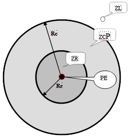
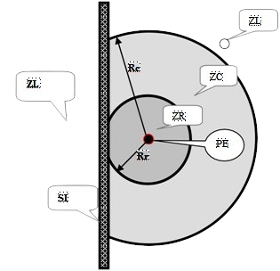

| Publicação |
D.O.U. |
MTb n.º 3.214, de 08 de junho de 1978 |
06/07/78 |
| Alterações/Atualizações |
D.O.U. |
SSMT n.º 12, de 06 de junho de 1983 |
14/06/83 |
| Portaria MTE n.º 598, de 07 de dezembro de 2004 |
08/09/04 |
| Portaria MTPS n.º 508, de 29 de abril de 2016 |
02/05/16 |
| Portaria SEPRT n.º 915, de 30 de julho de 2019 |
31/07/19 |
10.1 - OBJETIVO E CAMPO DE APLICAÇÃO
10.1.1 - Norma Regulamentadora - NR estabelece os requisitos e condições mínimas objetivando a implementação de medidas de controle e sistemas preventivos, de forma a garantir a segurança e a saúde dos trabalhadores que, direta ou indiretamente, interajam em instalações elétricas e serviços com eletricidade.
10.1.2 - Esta NR se aplica às fases de geração, transmissão, distribuição e consumo, incluindo as etapas de projeto, construção, montagem, operação, manutenção das instalações elétricas e quaisquer trabalhos realizados nas suas proximidades, observando-se as normas técnicas oficiais estabelecidas pelos órgãos competentes e, na ausência ou omissão destas, as normas internacionais cabíveis.
10.2 - MEDIDAS DE CONTROLE
10.2.1 - Em todas as intervenções em instalações elétricas devem ser adotadas medidas preventivas de controle do risco elétrico e de outros riscos adicionais, mediante técnicas de análise de risco, de forma a garantir a segurança e a saúde no trabalho.
10.2.2 - As medidas de controle adotadas devem integrar-se às demais iniciativas da empresa, no âmbito da preservação da segurança, da saúde e do meio ambiente do trabalho.
10.2.3 - As empresas estão obrigadas a manter esquemas unifilares atualizados das instalações elétricas dos seus estabelecimentos com as especificações do sistema de aterramento e demais equipamentos e dispositivos de proteção.
10.2.4 - Os estabelecimentos com carga instalada superior a 75 kW devem constituir e manter o Prontuário de Instalações Elétricas, contendo, além do disposto no subitem 10.2.3, no mínimo:
a) conjunto de procedimentos e instruções técnicas e administrativas de segurança e saúde, implantadas e relacionadas a esta NR e descrição das medidas de controle existentes;
b) documentação das inspeções e medições do sistema de proteção contra descargas atmosféricas e aterramentos elétricos;
c) especificação dos equipamentos de proteção coletiva e individual e o ferramental, aplicáveis conforme determina esta NR;
d) documentação comprobatória da qualificação, habilitação, capacitação, autorização dos trabalhadores e dos treinamentos realizados;
e) resultados dos testes de isolação elétrica realizados em equipamentos de proteção individual e coletiva;
f) certificações dos equipamentos e materiais elétricos em áreas classificadas;
g) relatório técnico das inspeções atualizadas com recomendações, cronogramas de adequações, contemplando as alíneas de “a” a “f”.
10.2.5 - As empresas que operam em instalações ou equipamentos integrantes do sistema elétrico de potência devem constituir prontuário com o conteúdo do item 10.2.4 e acrescentar ao prontuário os documentos a seguir listados:
a) descrição dos procedimentos para emergências;
b) certificações dos equipamentos de proteção coletiva e individual;
10.2.5.1 - As empresas que realizam trabalhos em proximidade do Sistema Elétrico de Potência devem constituir prontuário contemplando as alíneas “a”, “c”, “d” e “e”, do item 10.2.4 e alíneas “a” e “b” do item 10.2.5.
10.2.6 - O Prontuário de Instalações Elétricas deve ser organizado e mantido atualizado pelo empregador ou pessoa formalmente designada pela empresa, devendo permanecer à disposição dos trabalhadores envolvidos nas instalações e serviços em eletricidade.
10.2.7 - Os documentos técnicos previstos no Prontuário de Instalações Elétricas devem ser elaborados por profissional legalmente habilitado.
10.2.8 - MEDIDAS DE PROTEÇÃO COLETIVA
10.2.8.1 - Em todos os serviços executados em instalações elétricas devem ser previstas e adotadas, prioritariamente, medidas de proteção coletiva aplicáveis, mediante procedimentos, às atividades a serem desenvolvidas, de forma a garantir a segurança e a saúde dos trabalhadores.
10.2.8.3 - O aterramento das instalações elétricas deve ser executado conforme regulamentação estabelecida pelos órgãos competentes e, na ausência desta, deve atender às Normas Internacionais vigentes.
10.2.9 - MEDIDAS DE PROTEÇÃO INDIVIDUAL
10.2.9.1 - Nos trabalhos em instalações elétricas, quando as medidas de proteção coletiva forem tecnicamente inviáveis ou insuficientes para controlar os riscos, devem ser adotados equipamentos de proteção individual específicos e adequados às atividades desenvolvidas, em atendimento ao disposto na NR 6.
10.2.9.2 - As vestimentas de trabalho devem ser adequadas às atividades, devendo contemplar a condutibilidade, inflamabilidade e influências eletromagnéticas.
10.2.9.3 - É vedado o uso de adornos pessoais nos trabalhos com instalações elétricas ou em suas proximidades.
10.3 - SEGURANÇA EM PROJETOS
10.3.1 - É obrigatório que os projetos de instalações elétricas especifiquem dispositivos de desligamento de circuitos que possuam recursos para impedimento de reenergização, para sinalização de advertência com indicação da condição operativa.
10.3.2 - O projeto elétrico, na medida do possível, deve prever a instalação de dispositivo de seccionamento de ação simultânea, que permita a aplicação de impedimento de reenergização do circuito.
10.3.3 - O projeto de instalações elétricas deve considerar o espaço seguro, quanto ao dimensionamento e a localização de seus componentes e as influências externas, quando da operação e da realização de serviços de construção e manutenção.
10.3.3.1 - Os circuitos elétricos com finalidades diferentes, tais como: comunicação, sinalização, controle e tração elétrica devem ser identificados e instalados separadamente, salvo quando o desenvolvimento tecnológico permitir compartilhamento, respeitadas as definições de projetos.
10.3.4 - O projeto deve definir a configuração do esquema de aterramento, a obrigatoriedade ou não da interligação entre o condutor neutro e o de proteção e a conexão à terra das partes condutoras não destinadas à condução da eletricidade.
10.3.5 - Sempre que for tecnicamente viável e necessário, devem ser projetados dispositivos de seccionamento que incorporem recursos fixos de equipotencialização e aterramento do circuito seccionado.
10.3.6 - Todo projeto deve prever condições para a adoção de aterramento temporário.
10.3.7 - O projeto das instalações elétricas deve ficar à disposição dos trabalhadores autorizados, das autoridades competentes e de outras pessoas autorizadas pela empresa e deve ser mantido atualizado.
10.3.8 - O projeto elétrico deve atender ao que dispõem as Normas Regulamentadoras de Saúde e Segurança no Trabalho, as regulamentações técnicas oficiais estabelecidas, e ser assinado por profissional legalmente habilitado.
10.3.9 - O memorial descritivo do projeto deve conter, no mínimo, os seguintes itens de segurança:
a) especificação das características relativas à proteção contra choques elétricos, queimaduras e outros riscos adicionais;
b) indicação de posição dos dispositivos de manobra dos circuitos elétricos: (Verde - “D”, desligado e Vermelho - “L”, ligado);
c) descrição do sistema de identificação de circuitos elétricos e equipamentos, incluindo dispositivos de manobra, de controle, de proteção, de intertravamento, dos condutores e os próprios equipamentos e estruturas, definindo como tais indicações devem ser aplicadas fisicamente nos componentes das instalações;
d) recomendações de restrições e advertências quanto ao acesso de pessoas aos componentes das instalações;
e) precauções aplicáveis em face das influências externas;
f) o princípio funcional dos dispositivos de proteção, constantes do projeto, destinados à segurança das pessoas;
g) descrição da compatibilidade dos dispositivos de proteção com a instalação elétrica.
10.3.10 - Os projetos devem assegurar que as instalações proporcionem aos trabalhadores iluminação adequada e uma posição de trabalho segura, de acordo com a NR 17 - Ergonomia.
10.4 - SEGURANÇA NA CONSTRUÇÃO, MONTAGEM, OPERAÇÃO E MANUTENÇÃO
10.4.1 - As instalações elétricas devem ser construídas, montadas, operadas, reformadas, ampliadas, reparadas e inspecionadas de forma a garantir a segurança e a saúde dos trabalhadores e dos usuários, e serem supervisionadas por profissional autorizado, conforme dispõe esta NR.
10.4.2 - Nos trabalhos e nas atividades referidas devem ser adotadas medidas preventivas destinadas ao controle dos riscos adicionais, especialmente quanto a altura, confinamento, campos elétricos e magnéticos, explosividade, umidade, poeira, fauna e flora e outros agravantes, adotando-se a sinalização de segurança.
10.4.3 - Nos locais de trabalho só podem ser utilizados equipamentos, dispositivos e ferramentas elétricas compatíveis com a instalação elétrica existente, preservando-se as características de proteção, respeitadas as recomendações do fabricante e as influências externas.
10.4.3.1 - Os equipamentos, dispositivos e ferramentas que possuam isolamento elétrico devem estar adequados às tensões envolvidas, e serem inspecionados e testados de acordo com as regulamentações existentes ou recomendações dos fabricantes.
10.4.4 - As instalações elétricas devem ser mantidas em condições seguras de funcionamento e seus sistemas de proteção devem ser inspecionados e controlados periodicamente, de acordo com as regulamentações existentes e definições de projetos.
10.4.4.1 - Os locais de serviços elétricos, compartimentos e invólucros de equipamentos e instalações elétricas são exclusivos para essa finalidade, sendo expressamente proibido utilizá-los para armazenamento ou guarda de quaisquer objetos.
10.4.5 - Para atividades em instalações elétricas deve ser garantida ao trabalhador iluminação adequada e uma posição de trabalho segura, de acordo com a NR 17 - Ergonomia, de forma a permitir que ele disponha dos membros superiores livres para a realização das tarefas.
10.4.6 - Os ensaios e testes elétricos laboratoriais e de campo ou comissionamento de instalações elétricas devem atender à regulamentação estabelecida nos itens 10.6 e 10.7, e somente podem ser realizados por trabalhadores que atendam às condições de qualificação, habilitação, capacitação e autorização estabelecidas nesta NR.
10.5 - SEGURANÇA EM INSTALAÇÕES ELÉTRICAS DESENERGIZADAS
10.5.1 - Somente serão consideradas desenergizadas as instalações elétricas liberadas para trabalho, mediante os procedimentos apropriados, obedecida a seqüência abaixo:
a) seccionamento;
b) impedimento de reenergização;
c) constatação da ausência de tensão;
d) instalação de aterramento temporário com equipotencialização dos condutores dos circuitos;
e) proteção dos elementos energizados existentes na zona controlada (Anexo II);
(Alterada pela Portaria MTPS n.º 508, de 29 de abril de 2016)
f) instalação da sinalização de impedimento de reenergização.
10.5.2 - O estado de instalação desenergizada deve ser mantido até a autorização para reenergização, devendo ser reenergizada respeitando a seqüência de procedimentos abaixo:
a) retirada das ferramentas, utensílios e equipamentos;
b) retirada da zona controlada de todos os trabalhadores não envolvidos no processo de reenergização;
c) remoção do aterramento temporário, da equipotencialização e das proteções adicionais;
d) remoção da sinalização de impedimento de reenergização;
e) destravamento, se houver, e religação dos dispositivos de seccionamento
10.5.3 - As medidas constantes das alíneas apresentadas nos itens 10.5.1 e 10.5.2 podem ser alteradas, substituídas, ampliadas ou eliminadas, em função das peculiaridades de cada situação, por profissional legalmente habilitado, autorizado e mediante justificativa técnica previamente formalizada, desde que seja mantido o mesmo nível de segurança originalmente preconizado.
10.5.4 -
10.6 - SEGURANÇA EM INSTALAÇÕES ELÉTRICAS ENERGIZADAS
10.6.1 - As intervenções em instalações elétricas com tensão igual ou superior a 50 Volts em corrente alternada ou superior a 120 Volts em corrente contínua somente podem ser realizadas por trabalhadores que atendam ao que estabelece o item 10.8 desta Norma.
10.6.1.1 - Os trabalhadores de que trata o item anterior devem receber treinamento de segurança para trabalhos com instalações elétricas energizadas, com currículo mínimo, carga horária e demais determinações estabelecidas no Anexo III desta NR. (Alterado pela Portaria MTPS n.º 508, de 29 de abril de 2016)
10.6.1.2 - As operações elementares como ligar e desligar circuitos elétricos, realizadas em baixa tensão, com materiais e equipamentos elétricos em perfeito estado de conservação, adequados para operação, podem ser realizadas por qualquer pessoa não advertida.
10.6.2 - Os trabalhos que exigem o ingresso na zona controlada devem ser realizados mediante procedimentos específicos respeitando as distâncias previstas no Anexo II. (Alterado pela Portaria MTPS n.º 508, de 29 de abril de 2016)
10.6.3 - Os serviços em instalações energizadas, ou em suas proximidades devem ser suspensos de imediato na iminência de ocorrência que possa colocar os trabalhadores em perigo.
10.6.4 - Sempre que inovações tecnológicas forem implementadas ou para a entrada em operações de novas instalações ou equipamentos elétricos devem ser previamente elaboradas análises de risco, desenvolvidas com circuitos desenergizados, e respectivos procedimentos de trabalho.
10.6.5 - O responsável pela execução do serviço deve suspender as atividades quando verificar situação ou condição de risco não prevista, cuja eliminação ou neutralização imediata não seja possível.
10.7 - TRABALHOS ENVOLVENDO ALTA TENSÃO (AT)
10.7.1 - Os trabalhadores que intervenham em instalações elétricas energizadas com alta tensão, que exerçam suas atividades dentro dos limites estabelecidos como zonas controladas e de risco, conforme Anexo II, devem atender ao disposto no item 10.8 desta NR. (Alterado pela Portaria MTPS n.º 508, de 29 de abril de 2016)
10.7.2 - Os trabalhadores de que trata o item 10.7.1 devem receber treinamento de segurança, específico em segurança no Sistema Elétrico de Potência (SEP) e em suas proximidades, com currículo mínimo, carga horária e demais determinações estabelecidas no Anexo III desta NR. (Alterado pela Portaria MTPS n.º 508, de 29 de abril de 2016)
10.7.3 - Os serviços em instalações elétricas energizadas em AT, bem como aqueles executados no Sistema Elétrico de Potência - SEP, não podem ser realizados individualmente.
10.7.4 - Todo trabalho em instalações elétricas energizadas em AT, bem como aquelas que interajam com o SEP, somente pode ser realizado mediante ordem de serviço específica para data e local, assinada por superior responsável pela área.
10.7.5 - Antes de iniciar trabalhos em circuitos energizados em AT, o superior imediato e a equipe, responsáveis pela execução do serviço, devem realizar uma avaliação prévia, estudar e planejar as atividades e ações a serem desenvolvidas de forma a atender os princípios técnicos básicos e as melhores técnicas de segurança em eletricidade aplicáveis ao serviço.
10.7.6 - Os serviços em instalações elétricas energizadas em AT somente podem ser realizados quando houver procedimentos específicos, detalhados e assinados por profissional autorizado.
10.7.7 - A intervenção em instalações elétricas energizadas em AT dentro dos limites estabelecidos como zona de risco, conforme Anexo II desta NR, somente pode ser realizada mediante a desativação, também conhecida como bloqueio, dos conjuntos e dispositivos de religamento automático do circuito, sistema ou equipamento. (Alterado pela Portaria MTPS n.º 508, de 29 de abril de 2016)
10.7.7.1 - Os equipamentos e dispositivos desativados devem ser sinalizados com identificação da condição de desativação, conforme procedimento de trabalho específico padronizado.
10.7.8 - Os equipamentos, ferramentas e dispositivos isolantes ou equipados com materiais isolantes, destinados ao trabalho em alta tensão, devem ser submetidos a testes elétricos ou ensaios de laboratório periódicos, obedecendo-se as especificações do fabricante, os procedimentos da empresa e na ausência desses, anualmente.
10.7.9 - Todo trabalhador em instalações elétricas energizadas em AT, bem como aqueles envolvidos em atividades no SEP devem dispor de equipamento que permita a comunicação permanente com os demais membros da equipe ou com o centro de operação durante a realização do serviço.
10.8 - HABILITAÇÃO, QUALIFICAÇÃO, CAPACITAÇÃO E AUTORIZAÇÃO DOS TRABALHADORES
10.8.1 - É considerado trabalhador qualificado aquele que comprovar conclusão de curso específico na área elétrica reconhecido pelo Sistema Oficial de Ensino.
10.8.2 - É considerado profissional legalmente habilitado o trabalhador previamente qualificado e com registro no competente conselho de classe.
10.8.3 - É considerado trabalhador capacitado aquele que atenda às seguintes condições, simultaneamente:
a) receba capacitação sob orientação e responsabilidade de profissional habilitado e autorizado; e
b) trabalhe sob a responsabilidade de profissional habilitado e autorizado.
10.8.3.1 - A capacitação só terá validade para a empresa que o capacitou e nas condições estabelecidas pelo profissional habilitado e autorizado responsável pela capacitação.
10.8.4 - São considerados autorizados os trabalhadores qualificados ou capacitados e os profissionais habilitados, com anuência formal da empresa
10.8.5 - A empresa deve estabelecer sistema de identificação que permita a qualquer tempo conhecer a abrangência da autorização de cada trabalhador, conforme o item 10.8.4.
10.8.6 - Os trabalhadores autorizados a trabalhar em instalações elétricas devem ter essa condição consignada no sistema de registro de empregado da empresa
10.8.7 - Os trabalhadores autorizados a intervir em instalações elétricas devem ser submetidos a exame de saúde compatível com as atividades a serem desenvolvidas, realizado em conformidade com a NR 7 e registrado em seu prontuário médico.
10.8.8 - Os trabalhadores autorizados a intervir em instalações elétricas devem possuir treinamento específico sobre os riscos decorrentes do emprego da energia elétrica e as principais medidas de prevenção de acidentes em instalações elétricas, de acordo com o estabelecido no Anexo III desta NR. (Alterado pela Portaria MTPS n.º 508, de 29 de abril de 2016)
10.8.8.1 - A empresa concederá autorização na forma desta NR aos trabalhadores capacitados ou qualificados e aos profissionais habilitados que tenham participado com avaliação e aproveitamento satisfatórios dos cursos constantes do Anexo III desta NR. (Alterado pela Portaria MTPS n.º 508, de 29 de abril de 2016)
10.8.8.2 - Deve ser realizado um treinamento de reciclagem bienal e sempre que ocorrer alguma das situações a seguir:
a) troca de função ou mudança de empresa;
b) retorno de afastamento ao trabalho ou inatividade, por período superior a três meses;
c) modificações significativas nas instalações elétricas ou troca de métodos, processos e organização do trabalho.
10.8.8.3 - A carga horária e o conteúdo programático dos treinamentos de reciclagem destinados ao atendimento das alíneas “a”, “b” e “c” do item 10.8.8.2 devem atender as necessidades da situação que o motivou.
10.8.8.4 - Os trabalhos em áreas classificadas devem ser precedidos de treinamento especifico de acordo com risco envolvido.
10.8.9 - Os trabalhadores com atividades não relacionadas às instalações elétricas desenvolvidas em zona livre e na vizinhança da zona controlada, conforme define esta NR, devem ser instruídos formalmente com conhecimentos que permitam identificar e avaliar seus possíveis riscos e adotar as precauções cabíveis.
10.9 - PROTEÇÃO CONTRA INCÊNDIO E EXPLOSÃO
10.9.1 - As áreas onde houver instalações ou equipamentos elétricos devem ser dotadas de proteção contra incêndio e explosão, conforme dispõe a NR 23 - Proteção Contra Incêndios.
10.9.2 - Os materiais, peças, dispositivos, equipamentos e sistemas destinados à aplicação em instalações elétricas de ambientes com atmosferas potencialmente explosivas devem ser avaliados quanto à sua conformidade, no âmbito do Sistema Brasileiro de Certificação.
10.9.3 - Os processos ou equipamentos susceptíveis de gerar ou acumular eletricidade estática devem dispor de proteção específica e dispositivos de descarga elétrica.
10.9.4 - Nas instalações elétricas de áreas classificadas ou sujeitas a risco acentuado de incêndio ou explosões, devem ser adotados dispositivos de proteção, como alarme e seccionamento automático para prevenir sobretensões, sobrecorrentes, falhas de isolamento, aquecimentos ou outras condições anormais de operação.
10.9.5 - Os serviços em instalações elétricas nas áreas classificadas somente poderão ser realizados mediante permissão para o trabalho com liberação formalizada, conforme estabelece o item 10.5 ou supressão do agente de risco que determina a classificação da área.
10.10 - SINALIZAÇÃO DE SEGURANÇA
10.10.1 - Nas instalações e serviços em eletricidade deve ser adotada sinalização adequada de segurança, destinada à advertência e à identificação, obedecendo ao disposto na NR-26 - Sinalização de Segurança, de forma a atender, dentre outras, as situações a seguir:
a) identificação de circuitos elétricos;
b) travamentos e bloqueios de dispositivos e sistemas de manobra e comandos;
c) restrições e impedimentos de acesso;
d) delimitações de áreas;
e) sinalização de áreas de circulação, de vias públicas, de veículos e de movimentação de cargas;
f) sinalização de impedimento de energização;
g) identificação de equipamento ou circuito impedido.
10.11 - PROCEDIMENTOS DE TRABALHO
10.11.1 - Os serviços em instalações elétricas devem ser planejados e realizados em conformidade com procedimentos de trabalho específicos, padronizados, com descrição detalhada de cada tarefa, passo a passo, assinados por profissional que atenda ao que estabelece o item 10.8 desta NR.
10.11.2 - Os serviços em instalações elétricas devem ser precedidos de ordens de serviço especificas, aprovadas por trabalhador autorizado, contendo, no mínimo, o tipo, a data, o local e as referências aos procedimentos de trabalho a serem adotados.
10.11.3 - Os procedimentos de trabalho devem conter, no mínimo, objetivo, campo de aplicação, base técnica, competências e responsabilidades, disposições gerais, medidas de controle e orientações finais.
10.11.4 - Os procedimentos de trabalho, o treinamento de segurança e saúde e a autorização de que trata o item 10.8 devem ter a participação em todo processo de desenvolvimento do Serviço Especializado de Engenharia de Segurança e Medicina do Trabalho - SESMT, quando houver.
10.11.5 - A autorização referida no item 10.8 deve estar em conformidade com o treinamento ministrado, previsto no Anexo III desta NR. (Alterado pela Portaria MTPS n.º 508, de 29 de abril de 2016)
10.11.6 - Toda equipe deverá ter um de seus trabalhadores indicado e em condições de exercer a supervisão e condução dos trabalhos.
10.11.7 - Antes de iniciar trabalhos em equipe os seus membros, em conjunto com o responsável pela execução do serviço, devem realizar uma avaliação prévia, estudar e planejar as atividades e ações a serem desenvolvidas no local, de forma a atender os princípios técnicos básicos e as melhores técnicas de segurança aplicáveis ao serviço.
10.11.8 - A alternância de atividades deve considerar a análise de riscos das tarefas e a competência dos trabalhadores envolvidos, de forma a garantir a segurança e a saúde no trabalho.
10.12 - SITUAÇÃO DE EMERGÊNCIA
10.12.1 - As ações de emergência que envolvam as instalações ou serviços com eletricidade devem constar do plano de emergência da empresa.
10.12.2 - Os trabalhadores autorizados devem estar aptos a executar o resgate e prestar primeiros socorros a acidentados, especialmente por meio de reanimação cardio-respiratória.
10.12.3 - A empresa deve possuir métodos de resgate padronizados e adequados às suas atividades, disponibilizando os meios para a sua aplicação.
10.12.4 - Os trabalhadores autorizados devem estar aptos a manusear e operar equipamentos de prevenção e combate a incêndio existentes nas instalações elétricas.
10.13 - RESPONSABILIDADES
10.13.1 - As responsabilidades quanto ao cumprimento desta NR são solidárias aos contratantes e contratados envolvidos. (Revogado pela Portaria SEPRT n.º 915, de 30 de julho de 2019)
10.13.2 - É de responsabilidade dos contratantes manter os trabalhadores informados sobre os riscos a que estão expostos, instruindo-os quanto aos procedimentos e medidas de controle contra os riscos elétricos a serem adotados.
10.13.3 - Cabe à empresa, na ocorrência de acidentes de trabalho envolvendo instalações e serviços em eletricidade, propor e adotar medidas preventivas e corretivas.
10.13.4 - Cabe aos trabalhadores:
a) zelar pela sua segurança e saúde e a de outras pessoas que possam ser afetadas por suas ações ou omissões no trabalho;
b) responsabilizar-se junto com a empresa pelo cumprimento das disposições legais e regulamentares, inclusive quanto aos procedimentos internos de segurança e saúde; e
c) comunicar, de imediato, ao responsável pela execução do serviço as situações que considerar de risco para sua segurança e saúde e a de outras pessoas.
10.14 - DISPOSIÇÕES FINAIS
10.14.1 - Os trabalhadores devem interromper suas tarefas exercendo o direito de recusa, sempre que constatarem evidências de riscos graves e iminentes para sua segurança e saúde ou a de outras pessoas, comunicando imediatamente o fato a seu superior hierárquico, que diligenciará as medidas cabíveis. (Revogado pela Portaria SEPRT n.º 915, de 30 de julho de 2019)
10.14.2 - As empresas devem promover ações de controle de riscos originados por outrem em suas instalações elétricas e oferecer, de imediato, quando cabível, denúncia aos órgãos competentes.
10.14.3 - Na ocorrência do não cumprimento das normas constantes nesta NR, o MTE adotará as providências estabelecidas na NR-03.
10.14.4 - A documentação prevista nesta NR deve estar permanentemente à disposição dos trabalhadores que atuam em serviços e instalações elétricas, respeitadas as abrangências, limitações e interferências nas tarefas.
10.14.5 - A documentação prevista nesta NR deve estar, permanentemente, à disposição das autoridades competentes. (Revogado pela Portaria SEPRT n.º 915, de 30 de julho de 2019)
10.14.6 - Esta NR não é aplicável a instalações elétricas alimentadas por extra-baixa tensão.
GLOSSÁRIO
Alta Tensão (AT): tensão superior a 1000 volts em corrente alternada ou 1500 volts em corrente contínua, entre fases ou entre fase e terra.
Área Classificada: local com potencialidade de ocorrência de atmosfera explosiva
Aterramento Elétrico Temporário: ligação elétrica efetiva confiável e adequada intencional à terra, destinada a garantir a equipotencialidade e mantida continuamente durante a intervenção na instalação elétrica.
Atmosfera Explosiva: mistura com o ar, sob condições atmosféricas, de substâncias inflamáveis na forma de gás, vapor, névoa, poeira ou fibras, na qual após a ignição a combustão se propaga.
Baixa Tensão (BT): tensão superior a 50 volts em corrente alternada ou 120 volts em corrente contínua e igual ou inferior a 1000 volts em corrente alternada ou 1500 volts em corrente contínua, entre fases ou entre fase e terra.
Barreira: dispositivo que impede qualquer contato com partes energizadas das instalações elétricas.
Direito de Recusa: instrumento que assegura ao trabalhador a interrupção de uma atividade de trabalho por considerar que ela envolve grave e iminente risco para sua segurança e saúde ou de outras pessoas.
Equipamento de Proteção Coletiva (EPC): dispositivo, sistema, ou meio, fixo ou móvel de abrangência coletiva, destinado a preservar a integridade física e a saúde dos trabalhadores, usuários e terceiros.
Equipamento Segregado: equipamento tornado inacessível por meio de invólucro ou barreira.
Extra-Baixa Tensão (EBT): tensão não superior a 50 volts em corrente alternada ou 120 volts em corrente contínua, entre fases ou entre fase e terra
Influências Externas: variáveis que devem ser consideradas na definição e seleção de medidas de proteção para segurança das pessoas e desempenho dos componentes da instalação
Instalação Elétrica:conjunto das partes elétricas e não elétricas associadas e com características coordenadas entre si, que são necessárias ao funcionamento de uma parte determinada de um sistema elétrico.
Instalação Liberada para Serviços (BT/AT):aquela que garanta as condições de segurança ao trabalhador por meio de procedimentos e equipamentos adequados desde o início até o final dos trabalhos e liberação para uso.
Impedimento de Reenergização: condição que garante a não energização do circuito através de recursos e procedimentos apropriados, sob controle dos trabalhadores envolvidos nos serviços.
Invólucro: envoltório de partes energizadas destinado a impedir qualquer contato com partes internas.
Isolamento Elétrico: processo destinado a impedir a passagem de corrente elétrica, por interposição de materiais isolantes.
Obstáculo: elemento que impede o contato acidental, mas não impede o contato direto por ação deliberada.
Perigo: situação ou condição de risco com probabilidade de causar lesão física ou dano à saúde das pessoas por ausência de medidas de controle.
Pessoa Advertida: pessoa informada ou com conhecimento suficiente para evitar os perigos da eletricidade.
Procedimento: seqüência de operações a serem desenvolvidas para realização de um determinado trabalho, com a inclusão dos meios materiais e humanos, medidas de segurança e circunstâncias que impossibilitem sua realização.
Prontuário: sistema organizado de forma a conter uma memória dinâmica de informações pertinentes às instalações e aos trabalhadores.
Risco: capacidade de uma grandeza com potencial para causar lesões ou danos à saúde das pessoas.
Riscos Adicionais: todos os demais grupos ou fatores de risco, além dos elétricos, específicos de cada ambiente ou processos de Trabalho que, direta ou indiretamente, possam afetar a segurança e a saúde no trabalho.
Sinalização: procedimento padronizado destinado a orientar, alertar, avisar e advertir.
Sistema Elétrico: circuito ou circuitos elétricos inter-relacionados destinados a atingir um determinado objetivo.
Sistema Elétrico de Potência (SEP):conjunto das instalações e equipamentos destinados à geração, transmissão e distribuição de energia elétrica até a medição, inclusive.
Tensão de Segurança: extra baixa tensão originada em uma fonte de segurança.
Trabalho em Proximidade:trabalho durante o qual o trabalhador pode entrar na zona controlada, ainda que seja com uma parte do seu corpo ou com extensões condutoras, representadas por materiais, ferramentas ou equipamentos que manipule.
Travamento: ação destinada a manter, por meios mecânicos, um dispositivo de manobra fixo numa determinada posição, de forma a impedir uma operação não autorizada.
Zona de Risco: entorno de parte condutora energizada, não segregada, acessível inclusive acidentalmente, de dimensões estabelecidas de acordo com o nível de tensão, cuja aproximação só é permitida a profissionais autorizados e com a adoção de técnicas e instrumentos apropriados de trabalho.
Zona Controlada: entorno de parte condutora energizada, não segregada, acessível, de dimensões estabelecidas de acordo com o nível de tensão, cuja aproximação só é permitida a profissionais autorizados.
ANEXO II
ZONA DE RISCO E ZONA CONTROLADA
| Faixa de tensão Nominal da instalação elétrica em kV/ |
Rr - Raio de delimitação entre zona de risco e controlada em metros/ |
Rc - Raio de delimitação entre zona controlada e livre em metros |
"< 1" |
0,20 |
0,70 |
"³1 e < 3" |
0,22 |
1,22 |
³1 e < 3 |
0,22 |
1,22 |
³3 e < 6 |
0,25 |
1,25 |
³6 e < 10 |
0,35 |
1,35 |
³10 e < 15 |
0,38 |
1,38 |
³15 e < 20 |
0,40 |
1,40 |
³20 e < 30 |
0,56 |
1,56 |
³30 e < 36 |
0,58 |
1,58 |
³36 e < 45 |
0,63 |
1,63 |
³45 e < 60 |
0,83 |
1,83 |
³60 e < 70 |
0,90 |
1,90 |
³70 e < 110 |
1,00 |
2,00 |
³110 e < 132 |
1,10 |
3,10 |
³132 e < 150 |
1,20 |
3,20 |
³150 e < 220 |
1,60 |
3,60 |
³220 e < 275 |
1,80 |
3,80 |
³275 e < 380 |
2,50 |
4,50 |
³380 e < 480 |
3,20 |
5,20 |
³480 e < 700/p> |
5,20 |
7,20 |
Figura 1 - Distâncias no ar que delimitam radialmente as zonas de risco, controlada e livre

Figura 2 - Distâncias no ar que delimitam radialmente as zonas de risco, controlada e livre, com interposição de superfície de separação física adequada.

ZL = Zona livre
ZC = Zona controlada, restrita a trabalhadores autorizados
ZR = Zona de risco, restrita a trabalhadores autorizados e com a adoção de técnicas,instrumentos e equipamentos apropriados ao trabalho.
PE = Ponto da instalação energizado.
SI = Superfície isolante construída com material resistente e dotada de todos dispositivos de segurança.
ANEXO III TREINAMENTO CURSO BÁSICO - SEGURANÇA EM INSTALAÇÕES E SERVIÇOS COM ELETRICIDADE
I - Para os trabalhadores autorizados: carga horária mínima - 40h: Programação Mínima:
1. introdução à segurança com eletricidade.
2.riscos em instalações e serviços com eletricidade:
a) o choque elétrico, mecanismos e efeitos;
b) arcos elétricos; queimaduras e quedas;
c) campos eletromagnéticos.
3. Técnicas de Análise de Risco.
4. Medidas de Controle do Risco Elétrico:
a) desenergização.
b) aterramento funcional (TN / TT / IT); de proteção; temporário;
c) equipotencialização;
d) seccionamento automático da alimentação;
e) dispositivos a corrente de fuga;
f) extra baixa tensão;
g) barreiras e invólucros;
h) bloqueios e impedimentos;
i) obstáculos e anteparos;
j) isolamento das partes vivas;
k) isolação dupla ou reforçada;
l) colocação fora de alcance;
m) separação elétrica.
5. Normas Técnicas Brasileiras - NBR da ABNT: NBR-5410, NBR 14039 e outras;
6. Regulamentações do MTE:
a) NRs;
b) NR-10 (Segurança em Instalações e Serviços com Eletricidade);
c) qualificação; habilitação; capacitação e autorização.
7. Equipamentos de proteção coletiva.
8. Equipamentos de proteção individual.
9.Rotinas de trabalho - Procedimentos.
a) instalações desenergizadas;
b) liberação para serviços;
c) sinalização;
d) inspeções de áreas, serviços, ferramental e equipamento;
10. Documentação de instalações elétricas.
11.Riscos adicionais:
a) altura;
b) ambientes confinados;
c) áreas classificadas;
d) umidade;
e) condições atmosféricas.
12. Proteção e combate a incêndios:
a) noções básicas;
b) medidas preventivas;
c) métodos de extinção;
d) prática;
13. Acidentes de origem elétrica:
a) causas diretas e indiretas;
b) discussão de casos;
14. Primeiros socorros:
a) noções sobre lesões;
b) priorização do atendimento;
c) aplicação de respiração artificial;
d) massagem cardíaca;
e) técnicas para remoção e transporte de acidentados;
f) práticas.
Responsabilidades.
2. CURSO COMPLEMENTAR - SEGURANÇA NO SISTEMA ELÉTRICO DE POTÊNCIA (SEP) E EM SUAS PROXIMIDADES.
É pré-requisito para freqüentar este curso complementar, ter participado, com aproveitamento satisfatório, do curso básico definido anteriormente.
Carga horária mínima - 40h
(*) Estes tópicos deverão ser desenvolvidos e dirigidos especificamente para as condições de trabalho características de cada ramo, padrão de operação, de nível de tensão e de outras peculiaridades específicas ao tipo ou condição especial de atividade, sendo obedecida a hierarquia no aperfeiçoamento técnico do trabalhador.
I - Programação Mínima:
2.Organização do Sistema Elétrico de Potência - SEP.
3.Organização do trabalho:
a) programação e planejamento dos serviços;
b) trabalho em equipe;
c) prontuário e cadastro das instalações;
d) métodos de trabalho; e
e) comunicação.
4.Aspectos comportamentais.
5.Condições impeditivas para serviços.
6.Riscos típicos no SEP e sua prevenção (*):
a) proximidade e contatos com partes energizadas;
b) indução;
c) descargas atmosféricas;
d) estática;
e) campos elétricos e magnéticos;
f) comunicação e identificação; e
g) trabalhos em altura, máquinas e equipamentos
7.Técnicas de análise de Risco no SEP (*)
8.Procedimentos de trabalho - análise e discussão. (*)
9.Técnicas de trabalho sob tensão: (*):
a) em linha viva;
b) ao potencial;
c) em áreas internas;
d) trabalho a distância;
e) trabalhos noturnos; e
f) ambientes subterrâneos.
10.Equipamentos e ferramentas de trabalho (escolha, uso, conservação, verificação, ensaios) (*).
11.de proteção coletiva (*).
12.Equipamentos de proteção individual (*).
13.Posturas e vestuários de trabalho (*).
14.Segurança com veículos e transporte de pessoas, materiais e equipamentos(*).
15.Sinalização e isolamento de áreas de trabalho(*).
16.Liberação de instalação para serviço e para operação e uso (*).
17.Treinamento em técnicas de remoção, atendimento, transporte de acidentados (*).
18.Acidentes típicos (*) - Análise, discussão, medidas de proteção.
19.Responsabilidades (*).